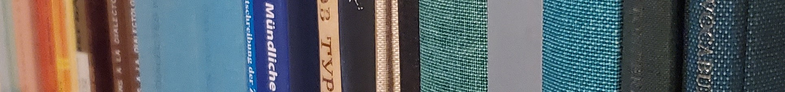

Publications

Thesis
| 2020 | Mohammadirad, Masoud. Pronominal clitics in Western Iranian languages: Description, mapping, and typological implications. PhD dissertation, Sorbonne Nouvelle – Paris 3. https://tel.archives-ouvertes.fr/tel-02988008 " |
Books
| in prep | Mohammadirad, Masoud. Hewramî folktales. |
| in review | Khan, Geoffrey, Paul Noorlander, Katherine Hodgson, Masoud Mohammadirad, Shuan Karim, Ergin Opengin, Neo-Aramaic in the context of the languages of Western Asia. |
| 2026 | Mohammadirad, Masoud. A grammar of Hewramî. (Comprehensive Grammar Library). Berlin: Language Science Press. https://doi.org/10.5281/zenodo.17140766 " |
| 2025 | Mohammadirad, Masoud. Echoes of the past: Hewramî narratives. (Open Text Collections). Berlin: Language Science Press. https://doi.org/10.5281/zenodo.17140764 " |
| 2024 | Khan, Geoffrey and Masoud Mohammadirad. Language Contact in Sanandaj: A study of the Impact of Iranian on Neo-Aramaic. Berlin, Boston: De Gruyter Mouton. " |
| 2022 | Khan, Geoffrey, Mohammadirad, Masoud, Molin, Dorota, and Noorlander Paul. Neo-Aramaic and Kurdish Folklore from Northern Iraq A Comparative Anthology with a Sample of Glossed Texts, 2 vols. Cambridge, UK: Open Book Publishers. " |
Journal Articles
| in review | Masoud Mohammadirad. Differential case marking on non-core arguments in Hewramî: A multivariate analysis. |
| in review | Shuan Karim and Masoud Mohammadirad. The category of copula in Goranî dialects: grammaticalisation, variation, and contact. |
| in review | Geoffrey Haig and Masoud Mohammadirad.Mapping variation in syntax: A case study of word order in OV languages within, and beyond, Western Asia. Iranian Studies |
| forthcoming | Shuan Karim and Masoud Mohammadirad. Demorphologization and Remorphologization: the development of a progressive prefix to a marker of negation in Hewramî. Journal of Histroical Linguisitcs. |
| in review | Noorlander, Paul,Masoud Mohammadirad, and Geoffrey Khan. Lexical borrowing across Neo-Aramaic dialects: An areal and quantitative approach. |
| 2026 | Mohammadirad, Masoud and Geoffrey Haig. Subject agreement emerges from topic continuity, not topic shift. Corpus-based evidence from Hewramî, a West Iranian language.Word Structure 19(1):55-91https://doi.org/10.3366/word.2026.026 " |
| 2025 | Mohammadirad, Masoud. A corpus-based analysis of object indexing in Hewramî.Corpus Linguistics and Linguistic Theory https://doi.org/10.1515/cllt-2025-0018 " |
| 2025 | Mohammadirad, Masoud and Shuan Karim. Typology of verbal person/number syncretism in Western Iranian languages. Language Dynamics and Change.15(1) 1-87 https://doi.org/10.1163/22105832-bja10038 " |
| 2025 | Mohammadirad, Masoud and Shuan Karim. The development of imperfective and subjunctive marking in Hewramî. Linguistics 63(5): 1265--1292 https://doi.org/10.1515/ling-2023-0247. " |
| 2025 | Mohammadirad, Masoud. Gorani substrate within Kurdish: Evidence from Southern dialects of Central Kurdish. Journal of Historical Linguistics. 15(3): 426--462. doi.org/10.1075/jhl.23001.moh " |
| 2025 | Anderson, Cormac, Matthew Scarborough, Lechosław Jocz, Martin Joachim Kümmel, Thomas Jügel, Britta Irslinger, Roland Pooth, Henrik Liljegren, Richard F. Strand, Geoffrey Haig, Masoud Mohammadirad, et al. The Indo-European Cognate Relationships Dataset. Scientific Data 12(1). doi.org/10.1038/s41597-025-05445-3 " |
| 2025 | Mohammadirad, Masoud and Ergin Opengin. Lenition of voiced stops across Kurdish. Folia Linguistica.59(s46-s1): 71--101 https://doi.org/10.1515/flin-2024-2049 " |
| 2024 | Mohammadirad, Masoud. External possession constructions in Laki. Linguistic Discovery. 18:1, pp. 1-25 " |
| 2021 | Mohammadirad, Masoud and Pollet Samvelian. Procliticization as a residual of second positioning: Evidence from West Iranian languages. Folia Linguistica Historica. 55: s42-s2, pp.291-338. doi.org/10.1515/flin-2021-2024 " |
| 2020 | Mohammadirad, Masoud. Predicative possession across Western Iranian languages. Folia Linguistica. 55: 3, pp.497-526. doi.org/10.1515/flin-2020-2038 " |
| 2020 | Anonby, Erik, Mortaza Taheri-Ardali, Laurentia Schreiber, Christiane Bulut, Geoffrey Haig, Peiman Pishyar Dehkordi, Mahnaz Talebi-Dastenaei, Fatemeh Shahverdi, Hossein Hashemi Zarajabad, Masoud Mohammadirad, et al. Turkic languages in the Atlas of the Languages of Iran (ALI). Turkic Languages. 24(2): 290–308. " |
| 2018 | Mohammadirad, Masoud and Mohammmad Rasekh-Mahand. Functions of the dative: An Iranian perspective Language Typology and Universals/STUF 71: 4. pp.539-575. doi.org/10.1515/stuf-2018-0021 " |
| 2017 | Mohammadirad, Masoud and Mohammmad Rasekh-Mahand. Instrumental semantic map in Western Iranian languages Language Typology and Universals/STUF 70: 4. pp.579-610. doi-org/10.1515/stuf-2017-0025 " |
Articles in Edited Volumes
| in review | Masoud Mohammadirad. Clitic pronouns in Iranian languages. In: Diego Pescarini and Eulàlia Bonet, eds. Oxford handbook of clitics. Oxford: Oxford University Press. |
| in press | Masoud Mohammadirad. Bound argument ordering across Central Kurdish and the Gorani substrate. In Jaffer Sheyholislami, Geoffrey Haig, Haidar Khezri, Salih Akin & Ergin Öpengin, eds. Oxford handbook of Kurdish Linguistics. Oxford: Oxford University Press. |
| in press | Mohammadirad, Masoud and Gholamhossein Karimi Doostan. Southern Kurdish. In Jaffer Sheyholislami, Geoffrey Haig, Haidar Khezri, Salih Akin & Ergin Öpengin, eds. Oxford handbook of Kurdish Linguistics. Oxford: Oxford University Press. |
| 2024 | Masoud Mohammadirad. Zagros region: The Kurdish-Gorani continuum. In Geoffrey Haig, Mohammad Rasekh-Mahand, Donald Stilo, Laurentia Schreiber, Nils Schiborr, eds. Post-predicate elements in the Western Asian Transition Zone: a corpus-based approach to areal typology.Berlin: Language Science Press. " |
| 2024 | Khan, Geoffrey and Mohammadirad, Masoud. “Gorani influence on NENA.” In Shuan Osman Karim and Saloumeh Gholami (eds.), Gorani in its Historical and Linguistic Context. Berlin, Boston: De Gruyter Mouton, 2024, 171–198. https://doi.org/10.1515/9783111168852-005 " |
| 2022 | Öpengin, Ergin and Masoud Mohammadirad. Areal Distribution, Structural Variation, and Diachrony. In Yaron Matras, Ergin Öpengin & Geoffrey Haig, eds. Structural and Typological Variation in the Dialects of Kurdish. pp 181-237. London: Palgrave Macmillan. doi.org/10.1007/978-3-030-78837-7_5 " |
| 2022 | Noorlander, Paul and Masoud Mohammadirad. Narrative Style and Discourse in Kurdish and Neo-Aramaic Oral Literature. Neo-Aramaic and Kurdish Folklore of Northern Iraq: A Comparative Anthology with a Sample of Glossed Texts."> pp 85-155. Cambridge, UK: Open Book Publishers. doi.org/10.11647/OBP.0306.03 " |
| 2019 | Anonby, Erik, Masoud Mohammadirad, and Jaffer Sheyholislami. Kordestan Province in the Atlas of the Languages of Iran: Research process, language distribution, and language classification. In Songül Gündoğdu, Ergin Öpengin, Geoffrey Haig & Erik Anonby, eds. Current issues in Kurdish linguistics. pp 9-38. Bamberg: Bamberg University Press. 10.20378/irb-56757 " |
Archival Entries
| 2022a | Masoud Mohammadirad. Gorani (Gawraǰū). In Haig, Geoffrey & Stilo, Donald & Doğan, Mahîr C. & Schiborr, Nils N. (eds.), WOWA — Word Order in Western Asia: A spoken-language-based corpus for investigating areal effects in word order variation. Bamberg: Bamberg University Press. https://multicast.aspra.uni-bamberg.de/resources/wowa/ |
| 2022b | Masoud Mohammadirad. Kurdish (Central, Sanandaj). In Haig, Geoffrey & Stilo, Donald & Doğan, Mahîr C. & Schiborr, Nils N. (eds.), WOWA — Word Order in Western Asia: A spoken-language-based corpus for investigating areal effects in word order variation. Bamberg: Bamberg University Press. https://multicast.aspra.uni-bamberg.de/resources/wowa/ |
| 2022c | Masoud Mohammadirad. Kurdish (Southern, Bijar). In Haig, Geoffrey & Stilo, Donald & Doğan, Mahîr C. & Schiborr, Nils N. (eds.), WOWA — Word Order in Western Asia: A spoken-language-based corpus for investigating areal effects in word order variation. Bamberg: Bamberg University Press. https://multicast.aspra.uni-bamberg.de/resources/wowa/ |
| 2022 | Mohammadirad, Masoud, Erik Anonby et al. Language distribution in Kordestan Province, Iran. In Erik Anonby, Mortaza Taheri-Ardali, et al., Atlas of the languages of Iran (ALI). Ottawa: GCRC (Geomatics and Cartographic Research Centre), Carleton University. http://iranatlas.net/index.html?module=module.language-distribution.kordestan |
| 2021 | Haig, Geoffrey and Masoud Mohammadirad. Kurdish: introduction and selected issues. In Bulut, Christiane, Anaïd Donabédian-Demopoulos, Geoffrey Haig, Geoffrey Khan, Pollet Samvelian, Stavros Skopeteas, Nina Sumbatova (eds.) (2020), Glottothèque: Languages of the Anatolia-Caucasus-Iran-Mesopotamia online (electronic resource). Bamberg/Cambridge/Göttingen/Moskow/Nicosia/Paris: LACIM network. https://spw.uni-goettingen.de/projects/lacim/lng-kur.html |
| 2021 | Öpengin, Ergin and Masoud Mohammadirad. Clitic/affix interactions in Central Kurdish. In Bulut, Christiane, Anaïd Donabédian-Demopoulos, Geoffrey Haig, Geoffrey Khan, Pollet Samvelian, Stavros Skopeteas, Nina Sumbatova (eds.) (2020), Glottothèque: Languages of the Anatolia-Caucasus-Iran-Mesopotamia online (electronic resource). Bamberg/Cambridge/Göttingen/Moskow/Nicosia/Paris: LACIM network. https://spw.uni-goettingen.de/projects/lacim/lng-kur.html |